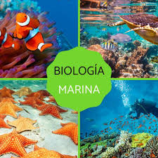

La biología marina es la ciencia rama de la biología que estudia la vida marina, lo cual incluye el estudio de la flora, la fauna, la funga y el microbioma propios del mar, así como de las comunidades marinas que estos conforman. Se ocupa principalmente de la descripción, clasificación biológica e investigación científica de las especies que constituyen los ecosistemas marinos y de los medios oceánicos en los que habitan con ayuda de disciplinas auxiliares como la geología marina, siendo también sus principales objetivos la conservación ambiental del mar y el mantenimiento integral de todos los organismos que ahí habitan, así como la adecuada gestión de los recursos naturales de sus hábitats mediante una previa planificación para la conservación y la implementación de las medidas necesarias para erradicar o al menos reducir problemas devastadores como la contaminación marina o la sobrepesca.
La biología marina incluye el estudio de organismos que van desde el microscópico plancton, hasta enormes cetáceos como las ballenas, entre las cuales se encuentran los seres vivos más grandes del planeta. Sin embargo, es de destacarse que los océanos cubren aproximadamente el 71 % de la corteza terrestre, ante lo cual también es importante tener en consideración que la mayor parte de ellos, especialmente en sus puntos más profundos e inaccesibles, permanecen totalmente inexplorados debido a las altas presiones y a la poca o nula luz solar que llega a esas zonas. Es por estas razones que, según el Census of Marine Life, el cual es uno de los estudios más precisos que se han llevado a cabo en cuanto al recuento total de la riqueza de especies marinas, se estima que hasta ahora solo se ha investigado un 9 % de la vida en los océanos, por lo que aún se desconocerían la mayor parte de esta correspondiente a alrededor de un 91 % de las especies que habitan el mar, pues todavía ni siquiera han sido descubiertas.
La dinámica oceánica define y describe el movimiento de los océanos, las olas, las mareas y las corrientes marinas. Su estudio es importante para entender factores como la distribución de las especies marinas y la migración de peces.
La marea es el cambio periódico del nivel del mar producido principalmente por las fuerzas de atracción gravitatoria que ejercen el Sol y la Luna sobre la Tierra.Aunque esta atracción es ejercida sobre todo el planeta, tanto en su parte sólida como líquida y gaseosa, este artículo se refiere a la atracción de la Luna y el Sol, juntos o por separado, sobre las aguas de los mares y océanos (ver también marea del planeta Tierra). Otros fenómenos ocasionales, como los vientos, las lluvias, el desborde de ríos y los tsunamis provocan variaciones locales o regionales del nivel del mar, también ocasionales, pero que no pueden ser calificados de mareas, porque no están causados por la fuerza gravitatoria ni tienen periodicidad.
En fluidodinámica, las olas son ondas que se desplazan a través de la superficie de mares, océanos, ríos, lagos, canales y otros cuerpos de agua. Son generadas por el viento, que al soplar crea fuerzas de presión y fricción que perturban el equilibrio de la superficie de los océanos. El viento transfiere parte de su energía a las olas, ejerciendo una fuerza sobre la superficie del agua resultante de las diferencias de presión causadas por las fluctuaciones de la velocidad del viento cerca de la interfase entre aire y mar. La superficie alterada se restablece por acción de la gravedad. La interacción cíclica entre la fuerza de presión ejercida por el viento y la fuerza de gravedad hace que las olas se propaguen, y se alejen progresivamente de su zona de generación.
Una corriente oceánica o corriente marina es un movimiento de las aguas en los océanos y, en menor grado, de los mares más extensos. Estas corrientes tienen multitud de causas, principalmente, el movimiento de rotación terrestre (que actúa de manera distinta y hasta opuesta en el fondo del océano y en la superficie), así como el movimiento de traslación de la Tierra, la configuración de las costas y la ubicación relativa de los continentes. En cambio, los vientos constantes o planetarios constituyen prácticamente una causa inexistente, ya que algunas coincidencias entre las corrientes y los vientos planetarios se deben a que comparten una causa común, es decir, los movimientos astronómicos de la Tierra.

Generalmente los organismos marinos se agrupan según su función, tamaño, y hábito de vida.